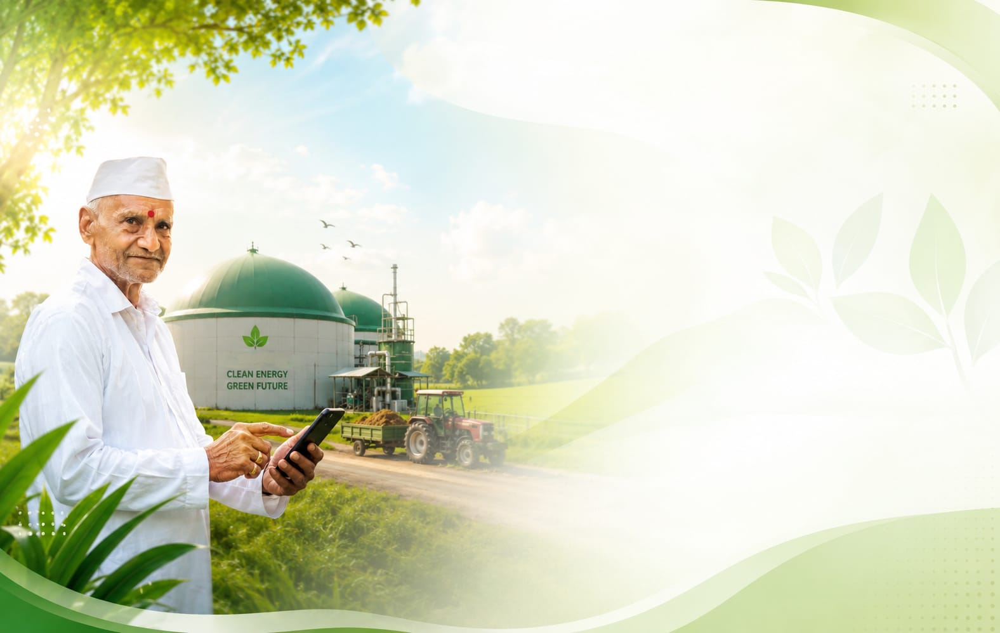

In Association With
Bhandaraj Seva Sahakari Society Reg.No.461
निसर्गासाठी उत्तम, भविष्यासाठी योग्य.
AI आणि आधुनिक तंत्रज्ञानाची जोड.
कचऱ्यातून समृद्धीकडे.
Krushi Urja Innovations is a sustainable agriculture consultancy and farmer training organization committed to supporting farmers through practical organic farming guidance, sustainable agricultural practices, and field-based learning programs.
Our work focuses on helping farming communities adopt environmentally responsible and economically sustainable agricultural methods through consultancy, training initiatives, farm guidance, and capacity-building programs.
We believe agriculture is not only a source of livelihood, but also the foundation of rural development, environmental sustainability, and future food security. Through practical learning, farmer engagement, and sustainable farming approaches, we aim to encourage resilient agricultural systems that create long-term value for both farmers and communities.
At Krushi Urja Innovations, we are dedicated to building trust-based relationships with farmers by promoting knowledge-driven agriculture, responsible farming practices, and continuous learning that supports sustainable growth and rural empowerment.
प्रशिक्षित शेतकरी
पूर्ण प्रकल्प
सल्लामसलत
शाश्वत मॉडेल्स
Get clarity on the organic certification process with answers to the most common questions we receive. Whether you're a farmer, processor, or exporter, we're here to guide you every step of the way.
Read MoreWe provide end-to-end solutions for organic farming, consultancy, training, inspection, documentation and sustainable rural development.
Comprehensive organic farming training for farmers, students, FPOs & agripreneurs.
Professional field inspection and organic verification for compliance.
Expert guidance for sustainable agriculture and organic certification.
Complete documentation support for organic certification and regulatory compliance.
Innovative waste management and rural sustainability solutions.
We are here to guide you with the right solutions for your agricultural needs.
Krushi Urja Innovations अंतर्गत आमचा मुख्य संशोधन व विकास प्रकल्प “Waste to Wealth” या संकल्पनेवर आधारित असून तो सध्या प्रगत प्रक्रियेत आहे.
या प्रकल्पाद्वारे कृषी अवशेष, सेंद्रिय कचरा आणि जैविक संसाधनांचे मूल्यवर्धन करून हरित ऊर्जा, जैवउर्जा आणि शाश्वत ग्रामीण संसाधन निर्मितीच्या दिशेने कार्य केले जात आहे.
शाश्वत शेती आणि विकासाकडे वाटचाल करण्याचे सोपे टप्पे
सल्लामसलत
शेत तपासणी
कागदपत्रे
मार्गदर्शन
प्रमाणन साहाय्य
शाश्वत विकास
भारतीय शेतकरी हा देशाच्या अर्थव्यवस्थेचा कणा आहे. त्याच्या कष्टातूनच राष्ट्राची प्रगती घडते आणि समाजाची समृद्धी निर्माण होते. मात्र आजही ग्रामीण भागात तंत्रज्ञान, माहिती आणि आधुनिक व्यवस्थापन यांची कमतरता मोठ्या प्रमाणात जाणवते. ही दरी कमी करून शेतकऱ्यांना डिजिटल युगाशी जोडणे आणि त्यांच्या मेहनतीला नवतंत्रज्ञानाची ताकद देणे, हीच आमची प्रेरणा आहे.
अधिक माहितीसाठी संपर्क साधा